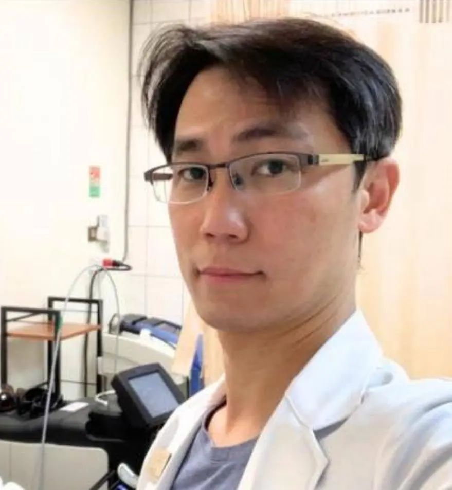

醫療團隊

台北院區院長 劉柏孜 物理治療師
Po-tzu Liu, PT (Physical Therapist)
學歷
- 高考合格物理治療師
- 成功大學物理治療系學士
經歷
- 永和復康醫院 物理治療師
- 常春復健診所 物理治療師
- 台大新竹分院 物理治療師
- 興雅診所 物理治療師
- 師大樂活診所 物理治療師
- 杏保醫網信誠診所 物理治療師
- 新順安物理治療所 物理治療師
- 陽明交大領航物理治療所 物理治療師
- 康健診所 物理治療師
專長
- 運動治療
- SPS脊椎螺旋穩定運動
- DNS動態神經肌肉穩定運動
- PF骨盆底肌的鍛鍊
- Redcord 紅繩S1（治療下背痛）
- 徒手治療
- CST顱薦椎治療
- SER情緒釋放
- SCS拮抗鬆弛術
- VM內臟筋膜放鬆（腹腔）
- LDT淋巴引流
- 高階儀器治療
- HILT高能量雷射
- ESWT聚焦式震波
- KKT聲波動力平衡治療
台中院區院長 謝雅雯 物理治療師
Ya-Wen Hsieh, PT (Physical Therapist)
學歷
- 國家高等考試合格物理治療師
- 中山醫學大學 物理治療學系 碩士
- 中國文化大學推廣教育部 法律學分班
經歷
- 卓立物理治療所（台中院區） 院長
- 卓立復健科診所 治療長
- 台中市物理治療師公會 第六屆監事
- 台中市物理治療師公會 性別平等委員會 委員
- 中山醫學大學 物理治療學系友會 第九屆理事
- 勞工安全衛生健康 管理人員 受訓合格
- BLS 基本救命術 受訓合格人員
專長
- 放射式體外震波（德國Richard wolf、瑞士EMS、瑞士Storz Medical）
- 聚焦式體外震波（德國Richard wolf 1&2、Richard wolf LSTC、瑞士Storz Medical）
- 高能量雷射（樂福雷射Hilthera4.0 / 喜樂Hiro3.0 / 健力適雷射MLS7.5）
- 骨盆底肌訓練（BTL）
- 重複性經顱刺激 rTMS
- 徒手治療（骨折、術後、運動傷害、結構性損傷、軟組織損傷）

彰化院區院長 卓宗成 物理治療師
Tsung-Cheng Chuo, PT (Physical Therapist)
學歷
- 中山醫學大學 碩士
- 中山醫學大學 學士
- 高考及格物理治療師
- 教育部審定合格 部定講師
經歷
- 中山醫學大學校友總會 理事
- 中華民國物理治療師公會全聯會 理事
- 台中市物理治療師公會 常務理事
- 彰化縣物理治療師公會 理事
- 台灣整合醫學協會 監事
- 彰化基督教醫院 復健技術部
- 彰化縣政府身心障礙鑑定 審查委員
- 仁德護專科學校復健科 兼任講師
- 弘光科技大學物理治療系 兼任講師
專長
- 英國Cyriax徒手治療
- 美國HawkGrips鷹式手工具技術
- 德國Wolf體外震波治療
- 韓國Hilthera高能量雷射治療
- 挪威Redcord懸吊運動治療
- 兒童運動治療
跨專業醫療照護網絡
臨床照護有時需要不同專業接續合作。卓立物理治療所重視診間評估、復健訓練與跨領域轉介之間的銜接，讓個案在物理治療之外，也能依實際需求取得合適的醫療資源。
黃彥鈞 中醫師
中醫徒手・內針傷整合・精準全人醫療
黃彥鈞中醫師為台灣中醫師，專注於肌筋膜徒手、乾針與中醫傷科整合，並具瑞士 D.G.S.A. 官方認證乾針與徒手治療師資歷。臨床上擅長以結構評估、徒手處理、乾針與針藥併用的方式，協助處理肌筋膜疼痛、結構問題，以及伴隨內科狀態的複雜不適。
協作情境
當個案的疼痛或功能問題牽涉較複雜的肌筋膜張力、反覆性結構疼痛，或需要中醫針灸、傷科與內科整合評估時，可依診間判斷轉介黃醫師接續照護。物理治療著重功能評估、動作控制與運動訓練；中醫傷科與針藥整合則提供另一個臨床視角，讓照護在不同專業間延續。
跨專業照護夥伴皆為獨立執業之專業人員；實際轉介與治療安排仍依現場評估、臨床判斷與個案需求決定。